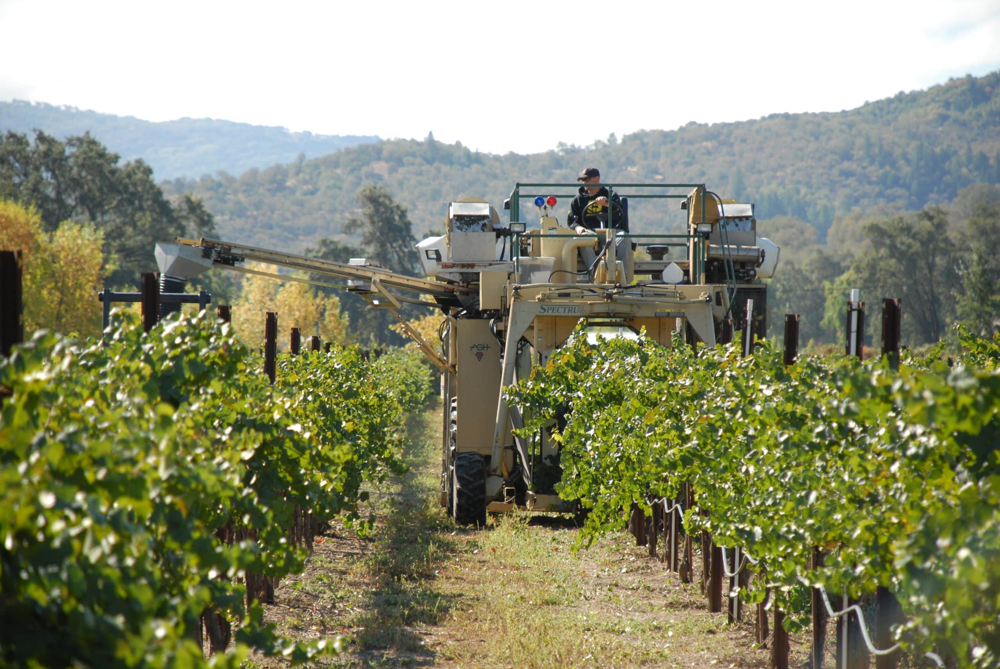

Range across the North Coast
Yokayo has access to North Coast wine grapes farmed by the Pauli Family across five AVAs in three counties.
Valley-floor ranches with deep, dark soils support Chardonnay, Sauvignon Blanc, Riesling, Gewürztraminer, Grenache, and Merlot. Foothill ranches range from volcanic red soil to light gravelly loam and support Cabernet Sauvignon, Pinot Noir, Syrah, Malbec, Sangiovese, and Barbera.
Certified sustainable
Pauli Family vineyards are certified sustainable through the Fish Friendly Farming program. In 2024, the family received the Next Wave of Sustainability Award from the California Land Institute.

